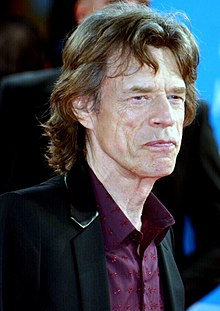
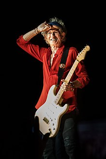
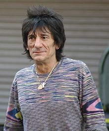

Sadašnji članovi benda su:

Mick Jagger
Sir Michael Phillip "Mick" Jagger (26. juli 1943.) je pjevač i jedan od osnivača rock sastava The Rolling Stones.
Pročitaj više

Keith Richards
Keith Richards (18. decembar 1943.) je engleski gitarist širom svijeta poznat kao "prva gitara" rock sastava The Rolling Stones.
Pročitaj višeCharlie Watts
Charles Robert "Charlie" Watts (2. jun 1941.) je bubnjar The Rolling Stonesa.
Pročitaj više

Ronnie Wood
Ronald David "Ronnie" Wood (1. jun 1947.) engleski je rock gitarist i basist, najpoznatiji kao član benda The Rolling Stones, u kojem svira od 1974. godine.
Pročitaj više